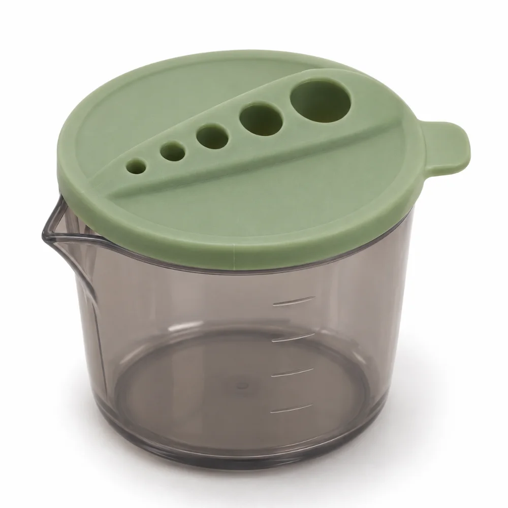

Vi gjør produktene klare.
Quizen trenger JavaScript for å vise bilder og ta vare på svarene dine. Slå det på i nettleseren og last siden på nytt.

De lagrede svarene dine blir slettet. Produktene får nye plasseringer.